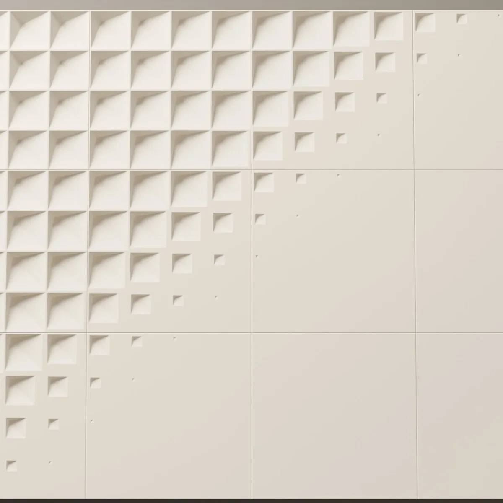
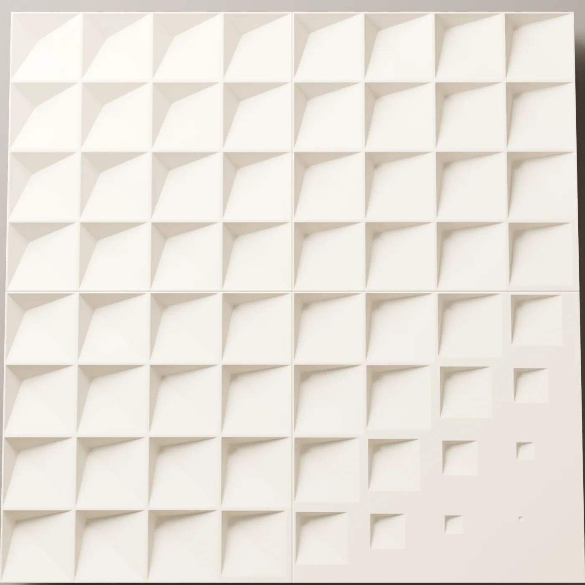
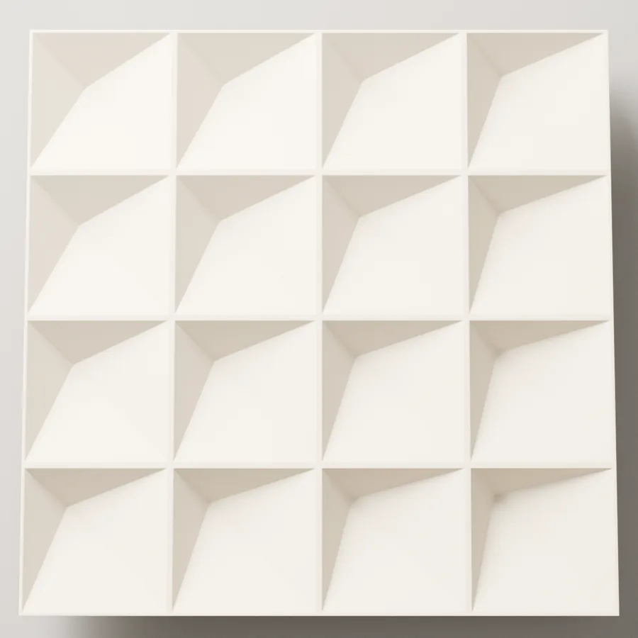
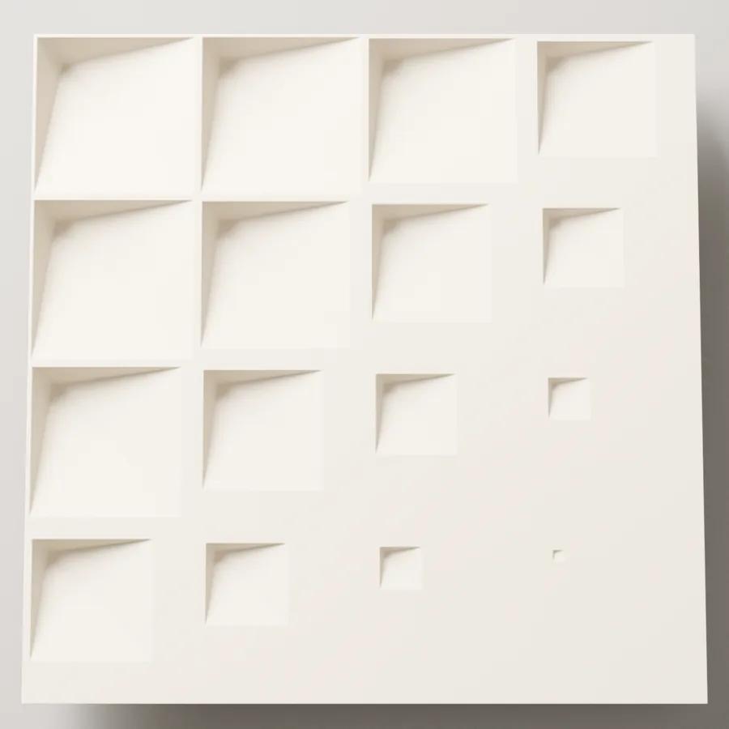
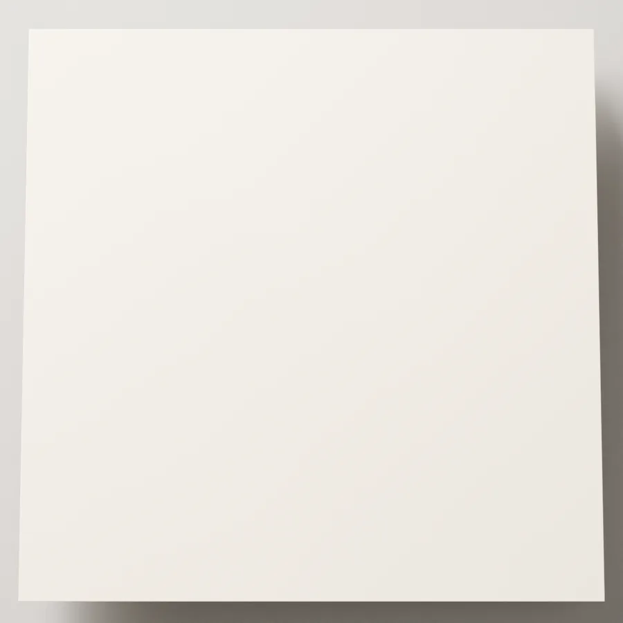
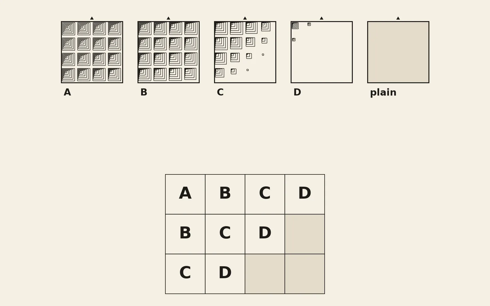
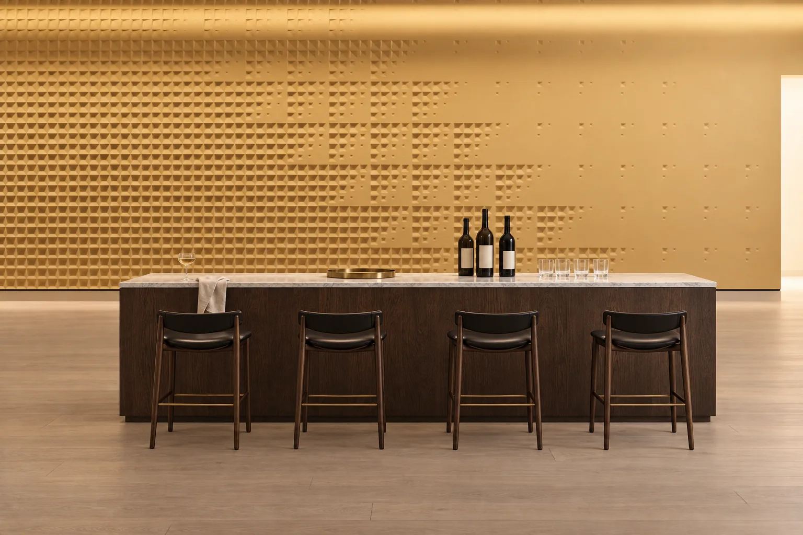
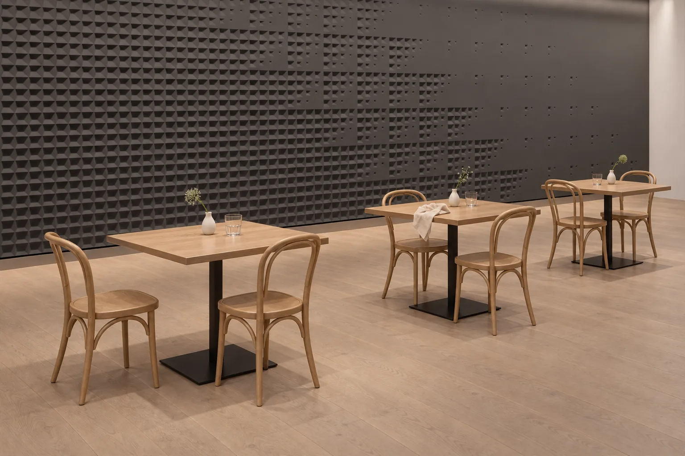

Close up
The same wall, close up: the depth of the relief.
- Size
- 400 × 400 mm
- Relief
- 20 mm
- Material
- Lumina PMAG™ (polymer-modified composite gypsum)
- Surface
- Paint-ready, or with an artisan finish
- Fixing
- Polymer adhesive + bottom ledger
- Lead time
- 4 weeks after contract and advance (up to 50 m²), ex-works Sapanca (EXW)
- Minimum order
- 7.5 m²
The moulds
The wall is laid from pieces cast in these moulds; the letters match the lay in the drawing, and the plain piece carries no relief.





The drawing
The design’s moulds and how they are laid on the wall. The mould is made for your order, and you approve the master before anything is cast.

In a room



Where it works
Because the cells grade in size across the wall, Accelerando reads most clearly on a long wall, where the eye can travel from one end to the other. The renders on this page place it in three rooms: behind the reception desk and lounge seating of a hotel lobby, on the long wall behind a bar counter, and on the wall that runs beside the tables of a restaurant. Each render paints the wall a different colour. The hotel lobby feature wall guide sets out the scale and lighting decisions for a lobby. Pieces come paint-ready or with an artisan finish; a paint-ready surface can be painted on site to match the room.
Frequently asked questions
What pieces make up Accelerando, and how are they laid?
Accelerando is a relief wall panel design laid from pieces cast in four moulds, A to D, plus plain pieces with no relief. The letters show where each piece sits in the lay drawn on this page. Send the dimensions of your wall and we show how Accelerando sits on it in a layout drawing; the edges of the wall, column faces and outside corners are worked out on the same drawing.
How deep is the Accelerando relief?
The relief is 20 mm. The mould is made for your order and you approve the master before anything is cast; the cast pieces match that master, so you see the depth of the relief on it before casting starts.
What is the lead time for Accelerando, and how is it fixed?
Lead time is 4 weeks after contract and advance for orders up to 50 m²; for larger orders the quote sets the date. Delivery is ex-works Sapanca (EXW). Pieces are hand-cast in Lumina PMAG™ — Polymer Modified Composite Gypsum and fixed to the wall with a polymer adhesive, or with a rail system on metal stud and plasterboard walls. Pieces that wrap a column, turn a corner or follow a curved wall are cast as Bespoke, in the same motif. The minimum order is 7.5 m². The mould is made for your order and you approve the master before casting; both are included in the 4 weeks. The bottom course sits on a fixed ledger and each course stands on the one below; the wall surface is checked before fixing.
To see how this design would sit on your wall, send the wall dimensions.
Column faces and outside corners are worked out on the layout drawing. Pieces that wrap a column, turn a corner or follow a curved wall are cast as Bespoke, in the same motif, and such a wall follows the Bespoke programme.